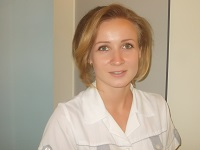

Команда
Наши преимущества - опыт, профессионализм, высококачественный материал, современное оборудование и искренняя забота о пациентах!
-

Онищенко Константин Васильевич
За годы своей деятельности, начиная со студенческих лет, получает действительно восторженные отзывы, к нему едут не только из других городов Украины, но и из других стран. Делясь своим опытом, и сам умножает свой багаж знаний и совершенствует мастерство.
-
Онищенко Наталья Степановна
Природное обаяние, в сочетании с высоким профессионализмом заслуженно получают доверие и уважение к Наталье от многочисленных пациентов. Не останавливаясь на достигнутом, Наталья Степановна постоянно повышает свой профессиональный уровень.
-

Минюк Вероника Анатольевна
Когда она рядом - доктора чувствуют себя еще увереннее. Неудивительно, так как руки лишними не бывают, особенно, когда ими управляют знания, которых у Вероники с каждым днем всё больше и больше!
-

Сушко Оксана Владимировна
Сообразительность и тяга к знаниям позволяют Оксане Владимировне быстро усваивать многолетний опыт своих учителей. Приятный в общении человек, молодой мастер своего дела.